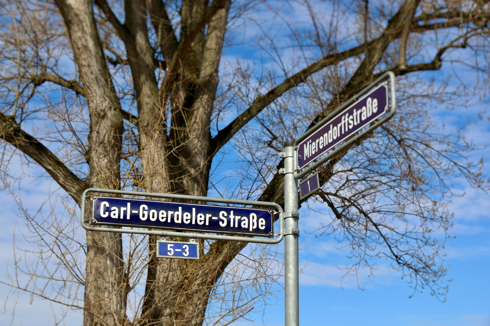
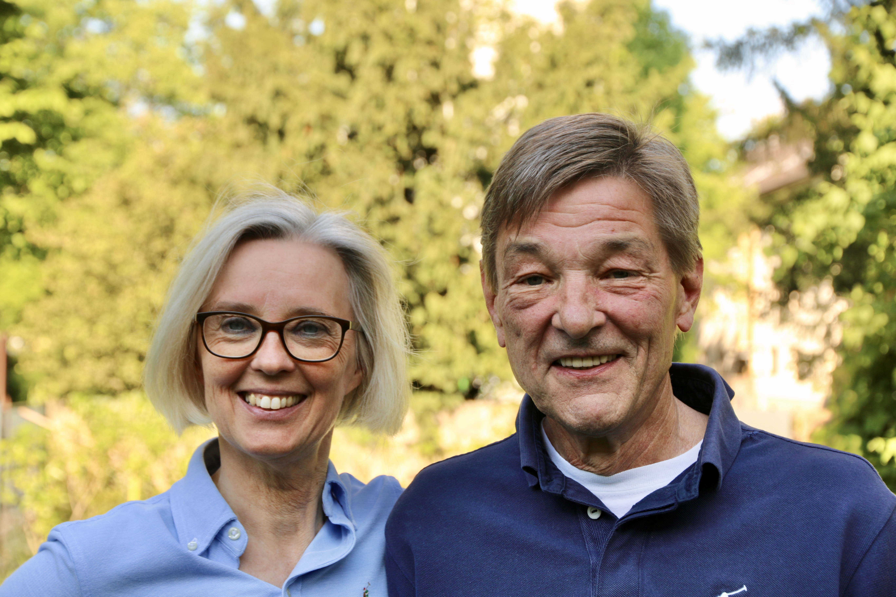

15:00 – 17:00 Uhr
Offener Treff
Kaffee, Tee und nette Gespräche – auch wenn mal kein besonderes Programm geplant ist. Einfach vorbeikommen, keine Anmeldung nötig.
Ausgenommen Feiertage
Ein Ort der Begegnung und des Lernens
Kaffee trinken, ins Gespräch kommen, voneinander lernen – jeden Donnerstag in der Dornbuschgemeinde.
Was wir machen
Bei einer Tasse Kaffee oder Tee kommen jeden Donnerstag Menschen zusammen – zum Reden, Lernen, Spielen und Ausprobieren.
Was ansteht
15:00 – 17:00 Uhr
Kaffee, Tee und nette Gespräche – auch wenn mal kein besonderes Programm geplant ist. Einfach vorbeikommen, keine Anmeldung nötig.
Ausgenommen Feiertage
Unter Anleitung entstehen aus farbigem Krepppapier Blumen verschiedenster Art – ideal zum Verschenken oder Dekorieren.
Unsere Idee
Bei Talente teilen kommen Menschen zusammen, um Wissen, Fähigkeiten und Erfahrungen auszutauschen – unabhängig von Alter, Konfession oder Hintergrund. Ob mit eigenem Talent oder einfach als Gast: Jeder ist willkommen.
Sprich uns gern direkt an oder schreib uns eine E-Mail.
Talente teilen gehört zum Netzwerk von „café deutschland“, einem ökumenischen Projekt von Caritas, Katholischer Stadtkirche und Diakonie in Frankfurt. Seit 2016 treffen sich an verschiedenen Orten in der Stadt Menschen aus aller Welt und Frankfurterinnen und Frankfurter bei Kaffee und Tee.
Mehr über café deutschland →So kommst du zu uns

Carl-Goerdeler-Straße 1
60320 Frankfurt am Main
🚇 5 Gehminuten von der U-Bahn-Haltestelle „Dornbusch“
Linien U1, U2, U3 und U8

Schön, dass du da bist

„Wir sind Stephanie und Jörg und haben das Projekt Talente teilen ins Leben gerufen. Wir freuen uns auf einen gemeinsamen Nachmittag!“
Mutter von fünf Kindern, tätig in der Bildungsarbeit und engagiert in der Trauerbegleitung. Sie bringt ihre vielfältigen Erfahrungen ein, um andere zu unterstützen.
Bringt Erfahrung aus der Zahnmedizin mit und hat ein Talent für Reparaturen. Er arbeitet leidenschaftlich gern mit Holz und teilt seine handwerklichen Fähigkeiten.